A tiered tray can make a kitchen counter, coffee station, dining table, or bathroom feel finished in minutes.
The harder question is how to style one without it looking like someone dumped a junk drawer across three shelves.
That part takes a little actual strategy.
I have styled plenty of small decorative displays at this point, and the trick always comes down to the same four things: height, balance, texture, and restraint.
You do not need twenty tiny decorations scattered everywhere.
You need a handful of pieces that genuinely work together.
There is a design principle that fits this better than almost anything else: the simplest version of a design is usually the strongest one.
A tiered tray already hands you built-in layers, so the actual job is adding interest to those layers without tipping into visual chaos.

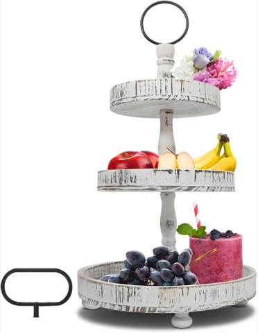
Adjustable 3 Tiered Tray Stand with Interchangeable Handles, White Farmhouse Decorative Tray
Shop on Amazon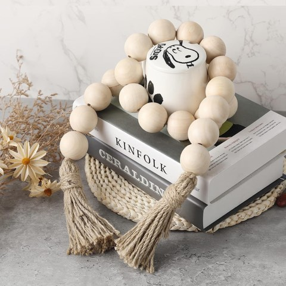
Farmhouse Decor Large Wood Bead Garland, 50 Inch, 1.6 Inch Natural Wood Beads with Tassels
Shop on AmazonEasy Tiered Tray Styling Formula to Try Today
If you want the simplest possible starting point, try this combination.
Top Level
Keep the top lighter than the rest of the tray.
A small vase, greenery, bottle, or seasonal accent works well here, followed by one or two tiny supporting details.
Middle Level
Add something functional or visually interesting at this stage.
A mug, a candle, a small sign, or a medium plant all work nicely in the middle tier.
Bottom Level
Place your largest decorative piece down here, at the base.
A small bowl, jar, pitcher, or chunky ceramic object all do the job well.
Then, once everything's in place, remove one object.
Seriously.
I often find the tray looks noticeably better the moment I take one thing away.
That final edit is what creates the breathing room that makes the whole arrangement feel intentional instead of crowded.
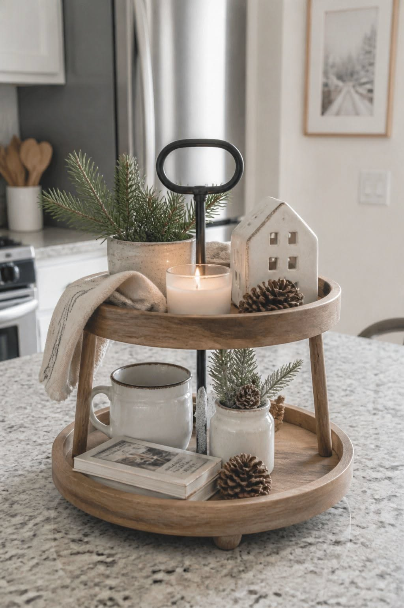
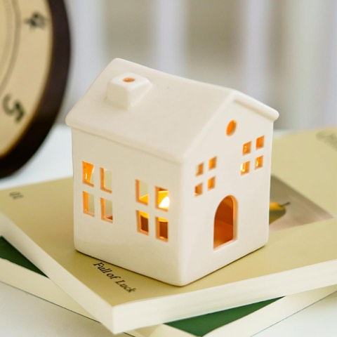
Hollowed Ceramic Village House Tealight Candle Holder for Fireplace Mantel and Table
Shop on AmazonHow to Style a Tiered Tray Like a Designer
You do not need expensive accessories to pull off a polished display.
You need visual balance.
Start with your largest piece.
Add medium pieces around it.
Finish with smaller accents that fill in whatever gaps remain.
Step back after every few additions.
You notice clutter far more easily from a short distance than when you are standing two inches from the tray itself.
I also recommend taking a quick photo on your phone partway through.
A camera tends to expose awkward gaps, crowded corners, and competing colors that your eyes quietly skip right past in person.
There is a classic design idea worth borrowing here too, that the small details are not just extras tacked onto a design, they are actually what make the design work in the first place.
That holds up perfectly on a tiered tray.
The little details genuinely matter, but only once they are supporting the bigger picture rather than fighting it.
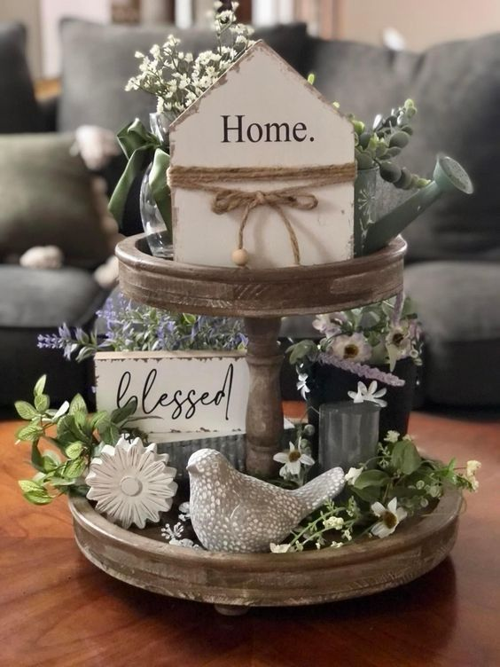
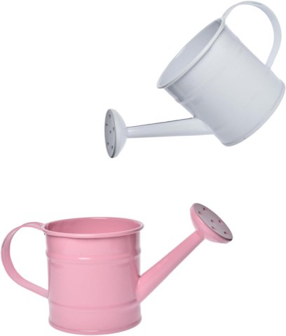
Decorative Mini Tin Watering Can, Cute Metal Jug for Crafts and Garden Themes
Shop on AmazonCommon Tiered Tray Styling Mistakes
Even experienced decorators overdo a tiered tray from time to time.
I know I have done it myself.
You find one cute little ceramic piece, then another, then another, and suddenly the whole tray looks like a miniature gift shop display.
Decorating Without Considering Function
This mistake shows up most often in kitchens specifically.
If the tray holds coffee supplies, keep those supplies genuinely accessible.
If it is purely decorative, place it somewhere that will not interfere with daily tasks around it.
Using Too Many Colors
A chaotic color palette can make even genuinely beautiful objects look unrelated to each other.
Stick with a controlled palette instead, and repeat those same colors across the different levels.
Making Every Object the Same Height
Uniform height flattens the whole composition fast.
Mix heights deliberately instead of letting everything land at the same level.
Ignoring the Background
A tray does not exist in isolation from the room around it.
Look at the backsplash, countertop, cabinets, wall art, and nearby appliances.
If the kitchen already has several patterns going on, keep the tray itself quieter.
Using Too Many Small Objects
Small decorations are tempting precisely because they seem harmless on their own.
But twelve tiny objects can create more visual clutter than three larger pieces ever would.
Choose fewer pieces, and give each one actual room to breathe.
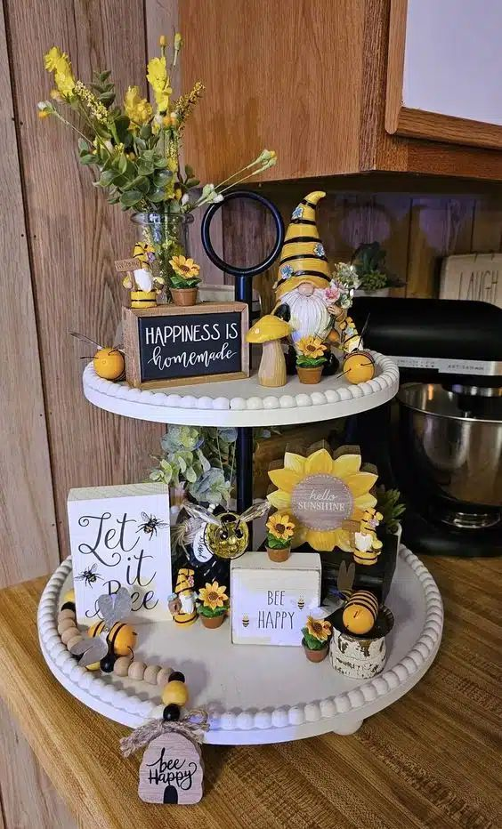
How to Style a Tiered Tray in a Small Space
Small spaces actually benefit from tiered trays, since they put vertical space to work instead of spreading everything across the counter.
If you are in an apartment or working with limited kitchen counter space, reach for a small two-tier tray rather than a large three-tier one.
Good spots to place it include:
- A coffee machine
- A kitchen sink
- A fruit bowl
- A cooktop
- A breakfast nook
- A bar cart
Just remember one important rule: do not sacrifice working space for decoration.
If you find yourself constantly moving the tray every time you cook, it is a sign to either reduce the number of objects on it or relocate the tray entirely.
Good decor should make a space feel better, not make breakfast harder to get through.
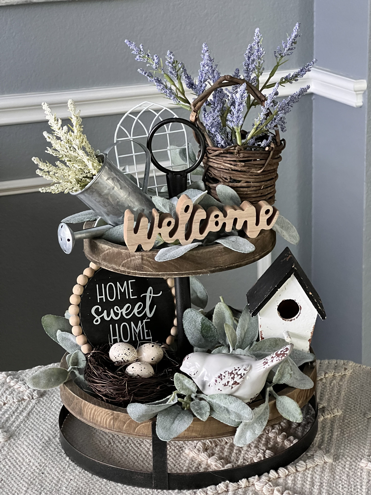
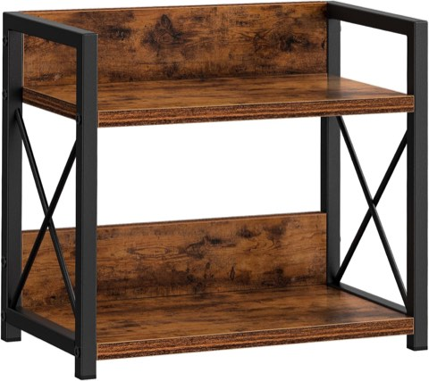
Giikin 2 Tier Countertop Shelf Organizer, Kitchen Spice Rack, Wood and Metal
Shop on Amazon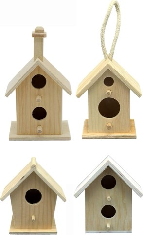
Creative Hobbies Mini 4 Inch Tall Birdhouse, Set of 4 Styles, Unfinished Wood
Shop on AmazonHow to Style a Tiered Tray With the 3 2 1 Formula
If you are staring at an empty tray thinking "where do I even start," try a simple 3-2-1 approach.
Use three small decorative elements, two medium pieces, and one larger focal point.
You can adjust those exact numbers depending on the tray's actual size.
The idea matters more than the precise count: create one visual anchor, then support it with smaller pieces around it.
Build Each Level Differently
Do not make every level look identical to the one above or below it.
The bottom might hold a small bowl and some greenery.
The middle could feature a mug and a sign.
The top could hold a vase with one short branch.
Different arrangements on each level create a far more collected look overall.
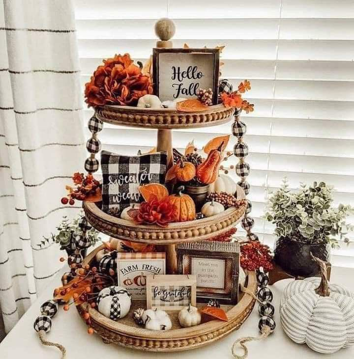
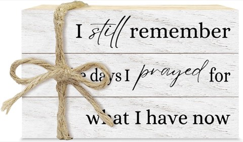
Mini Decorative Books for Home Decor, Small Faux Wood Book Stack, I Still Remember Sign
Shop on Amazon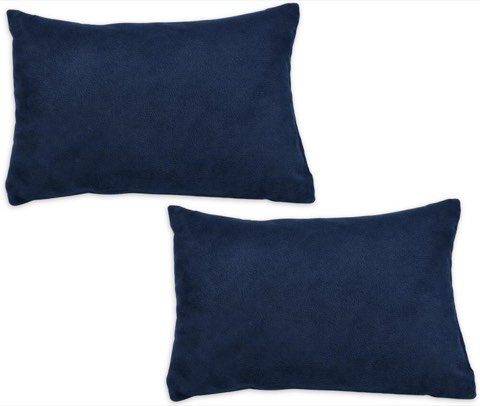
DS. DISTINCTIVE STYLE 2 Pack Small Decorative Pillow, 11 x 7 Inch, Navy
Shop on AmazonHow to Style a Tiered Tray With Signs and Quotes
Small signs can add real personality, especially in a farmhouse or cottage-style space.
That said, signs can quickly take over a display if you let them.
I would recommend one main sign rather than filling every level with words.
Choose a short phrase that supports the overall theme.
For a coffee station, something playful about coffee makes sense.
For a kitchen, a simple food- or family-related phrase works.
For seasonal styling, keep it to one small seasonal message.
The smaller the tray, the smaller the signs should get too.
That sounds obvious, but oversized signs cause one of the most common tiered tray mistakes out there.
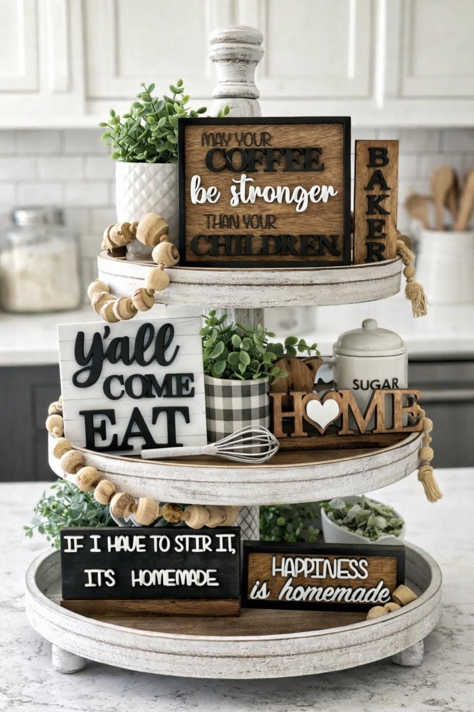
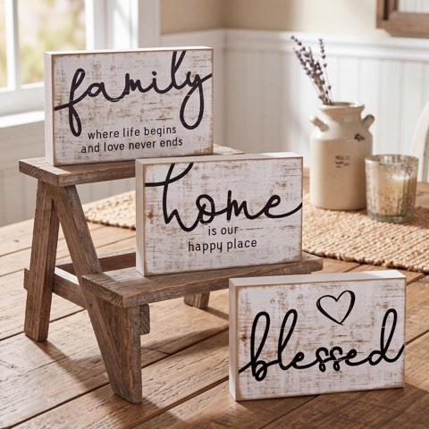
Jetec Mini Wooden Sign Farmhouse Shelf Decor, Retro Color, 4.25 x 2.76 Inch
Shop on Amazon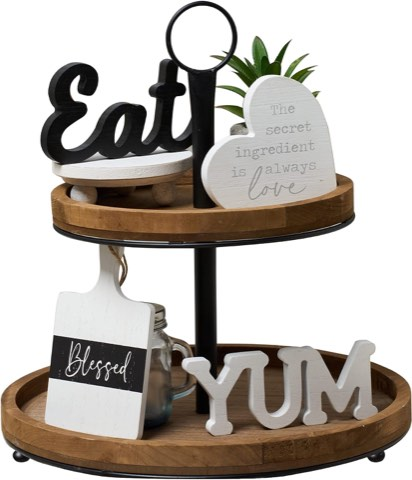
GENMOUS Farmhouse Kitchen Tiered Tray Decor Items Mini Set, Rustic Black and White
Shop on AmazonHow to Style a Tiered Tray With Greenery
Greenery is one of my favorite additions because it fills awkward gaps without ever making the display feel heavy.
Real plants work fine if the spot gets enough light, but faux greenery gives you a lot more flexibility overall.
Small eucalyptus stems, faux boxwood, olive branches, and trailing greenery all work beautifully.
Place greenery wherever the display needs a bit of movement.
A small stem can soften the edge of a tray.
A trailing piece can hang slightly over the side.
A compact plant can fill an otherwise empty corner.
Just avoid putting greenery on every single level.
If every tier has a plant on it, you lose the contrast that makes greenery interesting to look at in the first place.
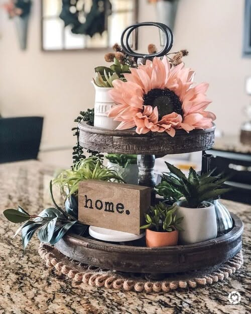
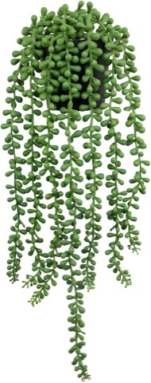
LOYWREE Artificial String of Pearls Plant in Black Pot, Faux Hanging Succulent
Shop on AmazonHow to Style a Tiered Tray for Different Seasons
One of the biggest advantages of a tiered tray is how easily it changes throughout the year.
You do not need to buy an entirely new display every single season.
Christmas Tiered Tray Ideas
For Christmas, combine greenery with a handful of seasonal accents.
Mini ornaments, bottle brush trees, small houses, pinecones, red berries, Christmas mugs, and faux evergreen branches all work well together.
The key is keeping the Christmas pieces genuinely small.
The tray should feel festive, not like Santa's overflow storage unit.
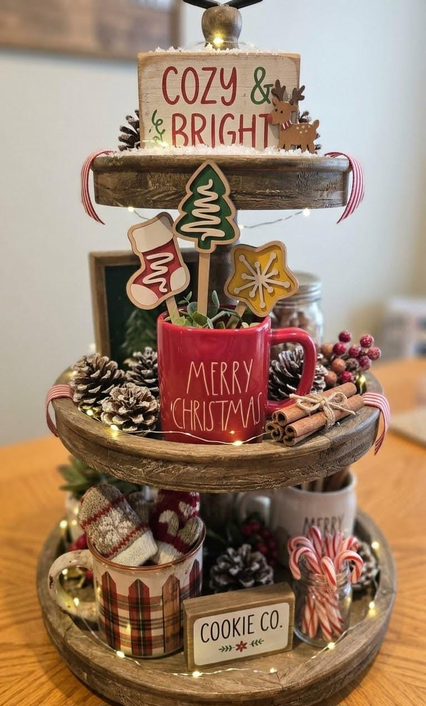
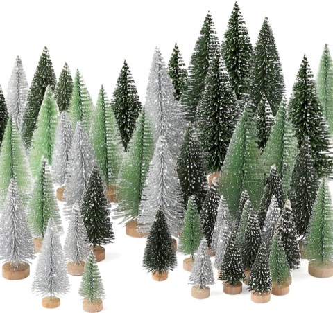
30 Pcs Mini Christmas Trees, Artificial Bottle Brush Trees with Wooden Base
Shop on AmazonFall Tiered Tray Ideas
Fall styling works beautifully with warm neutrals across the board.
Mini pumpkins, amber jars, dried foliage, wooden signs, cinnamon-inspired colors, and warm ceramic pieces all fit the season well.
I usually prefer muted orange and terracotta over extremely bright orange, since the softer tones blend more naturally with neutral interiors.
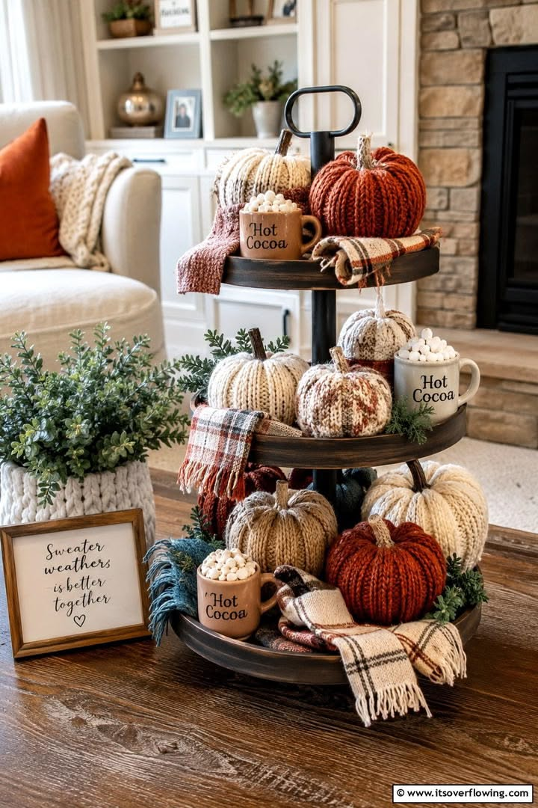
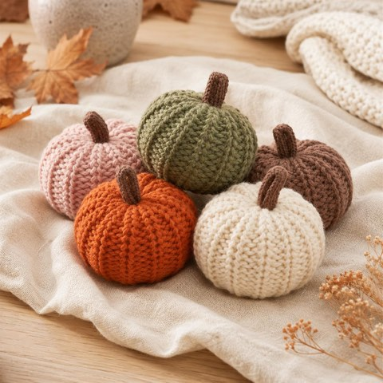
RAINFLOW Mini Knitted Pumpkin Cozy, Set of 5 Knit Pumpkins for Fall Decor
Shop on AmazonSummer Tiered Tray Ideas
Summer gives you more room for brighter accents than any other season on this list.
Try lemons, citrus colors, small floral arrangements, blue and white ceramics, or lightweight greenery.
A simple lemon-themed tray can look surprisingly cheerful sitting on a kitchen counter.
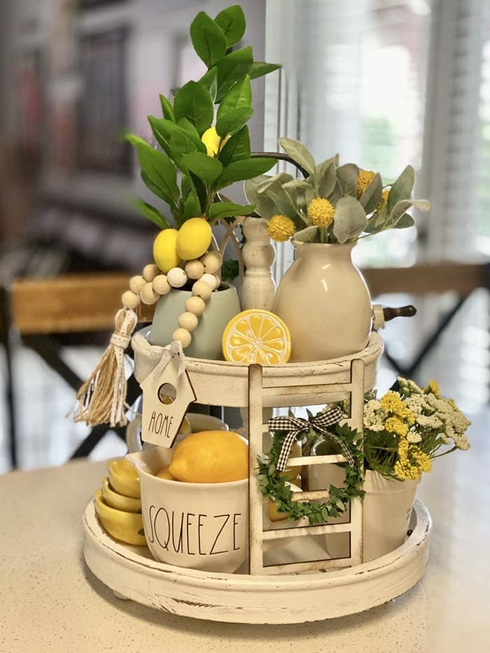
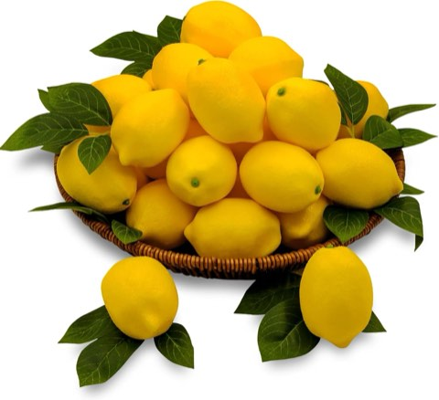
20 Pcs Fake Lemons Artificial Fruits with 25 Leaves, Faux Yellow Lifelike Plastic Lemons
Shop on AmazonSpring Tiered Tray Ideas
Use soft colors and natural details for spring above everything else.
Think small faux flowers, ceramic birds, mini eggs, pastel mugs, small greenery, and light wood accents.
Keep the whole palette soft and fresh rather than bold.
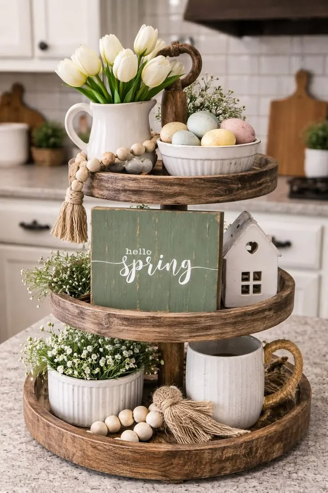
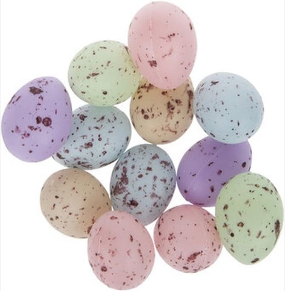
Bird Sized Eggs, Pastel Speckled for Crafts and Spring Decor, Plastic, 12 Pieces
Shop on AmazonHow to Style a Tiered Tray for a Kitchen
The kitchen is one of the easiest places to style a tiered tray, since you can blend decoration with genuinely useful items.
A coffee station makes an especially good spot for one.
Try a Baking-Themed Tray
For a baking corner, use small measuring cups, wooden spoons, mini rolling pins, ceramic jars, small recipe signs, and faux greenery.
You can build the whole look without filling every single inch of the tray.
Leave some empty space on purpose.
That empty space gives the decorations room to breathe and makes the whole tray read as more intentional.
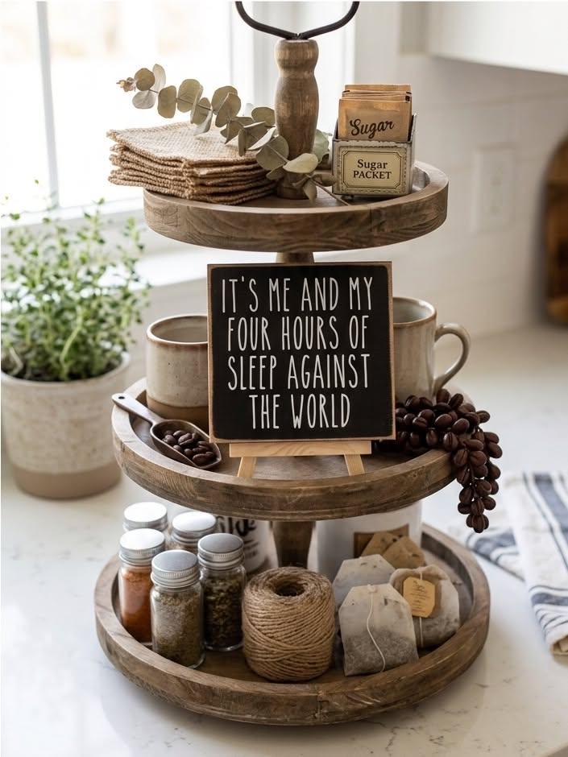
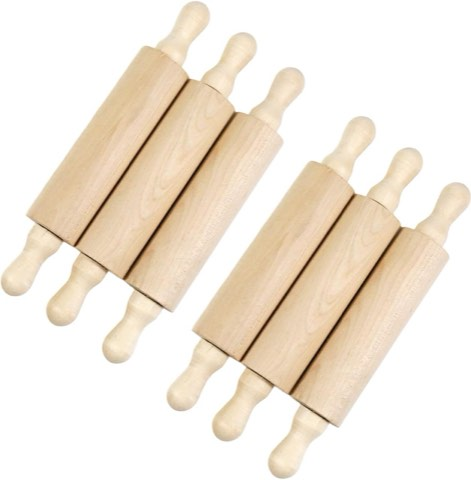
Kang and Chang Mini Unfinished Wood Rolling Pin for Tiered Tray Decor, 6 Pack
Shop on Amazon
Create a Cozy Coffee Tray
Try placing a small coffee mug, a miniature coffee sign, a jar of sugar, and a little plant or faux greenery across the different levels.
Keep whatever you reach for most often toward the front, so it is easy to grab without disturbing the rest of the display.
I also like adding one wooden element, since wood instantly makes a coffee display feel warmer.
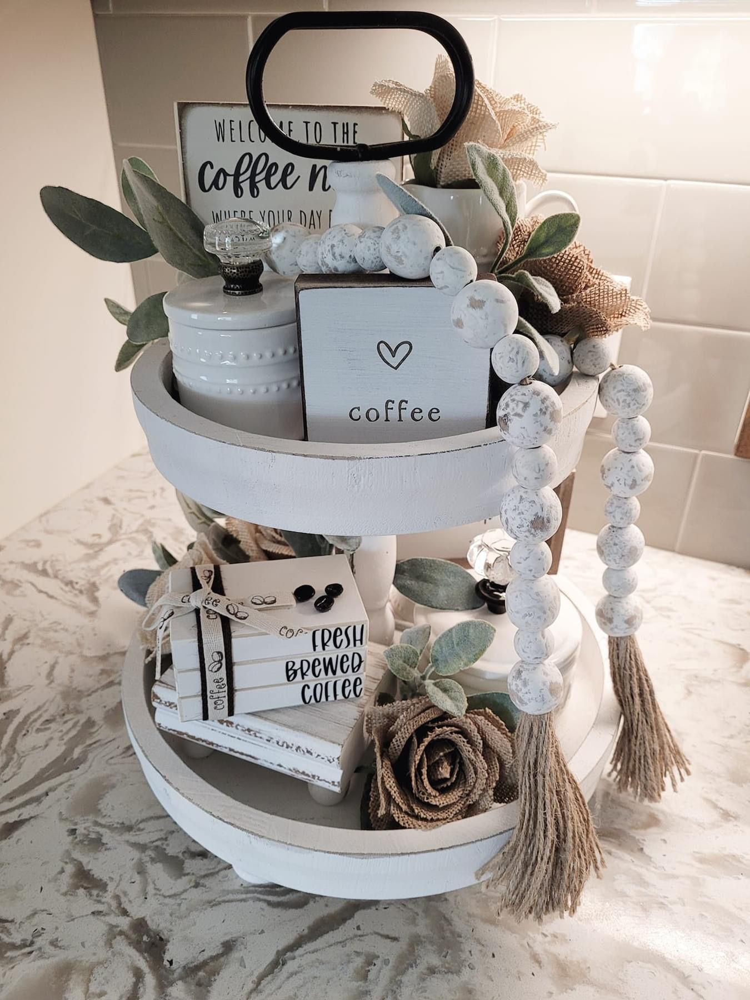
How to Style a Tiered Tray With Texture
Texture is what gives a small display real personality.
This matters especially with a neutral color palette.
Beige, cream, and white can look beautiful together, but they can also go flat fast if every single object shares the same smooth finish.
I like combining wood, ceramic, glass, metal, and greenery wherever possible.
A wooden bead strand softens a metal tray.
A ceramic mug adds weight beside something delicate like greenery.
A glass jar introduces a bit of transparency into the mix.
Texture is genuinely one of the most effective tools for creating visual interest, and you can build that layered look without adding a single extra object, just by changing up the materials already in play.
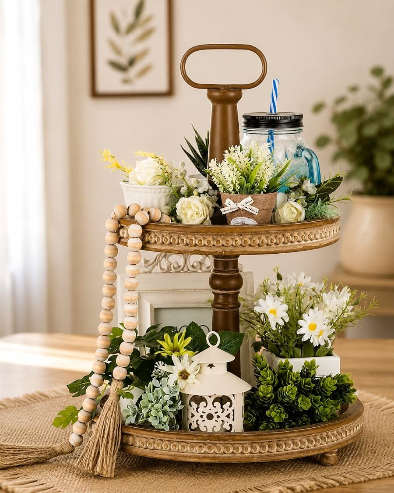
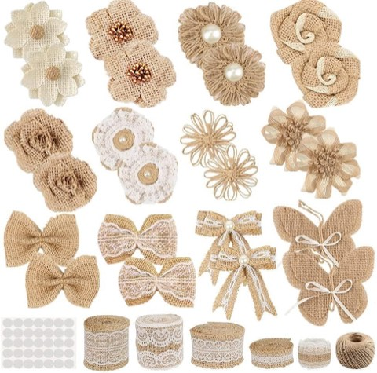
30 Pcs Burlap Hessian Flowers Set with 24 Burlap Flowers, Bowknots and Lace Ribbon Rolls
Shop on Amazon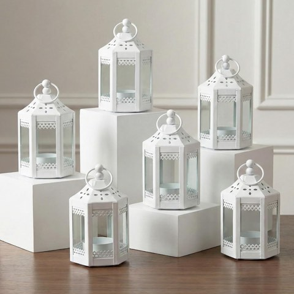
Vela Lanterns Tea Light Candle Holders, Mini Decorative Lanterns, White
Shop on AmazonHow to Style a Tiered Tray With Different Heights
Height makes or breaks a tiered tray more than any other single factor.
The tray itself already creates vertical levels, but the decorations on it still need varied heights to keep the whole composition interesting.
I normally combine tall, medium, and low pieces across the tray.
A small vase or bottle might sit on one level, a little sign or jar on another, and a short bowl or candle filling the remaining space.
Vary the Shapes Too
Height alone cannot save a display filled with objects that all look the same.
Mix round jars, rectangular signs, small bowls, narrow bottles, mini vases, wooden objects, and greenery into the arrangement.
The contrast between shapes creates visual interest on its own, without needing to add any more color to the mix.
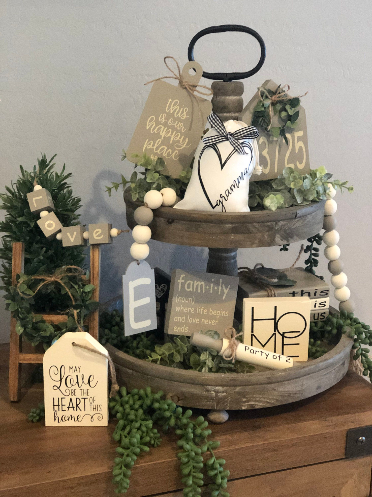
Use the Triangle Method
One of my favorite tricks is creating a loose visual triangle across the tray.
Picture three objects forming a triangle: a taller item at the back, a medium item toward the opposite side, and a shorter item closer to the front.
That arrangement keeps the eye moving across the whole display instead of settling in one spot.
You do not need mathematical precision here.
Nobody needs a protractor for kitchen decor.
Just avoid lining up every tall item in one straight row.
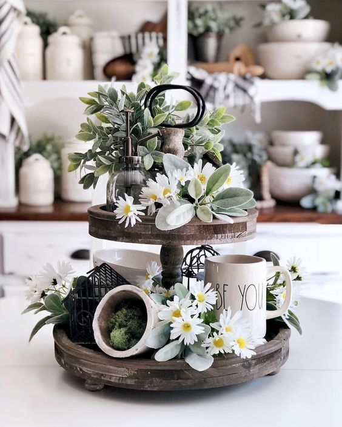
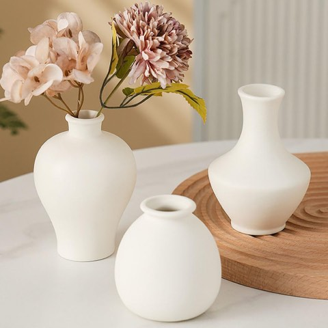
Daittin 3-Piece Mini Ceramic Bud Vases Set, Small White Matte Vases for Dried Flowers
Shop on Amazon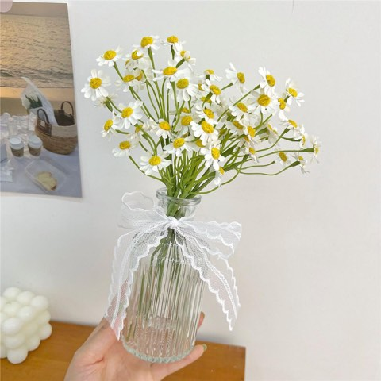
Small White Daisy Flowers Artificial, 2 Bouquets, 12 Pcs, 10 Inch Fake Daisies
Shop on AmazonHow to Style a Tiered Tray With the Right Base
Before adding a single decoration, look closely at the tray itself.
The material and shape should steer every styling choice that comes after.
A dark metal tray can carry warm wood, cream ceramics, and greenery well.
A pale wooden tray creates a softer foundation for neutral ceramics and natural textures instead.
Let the Surroundings Guide You
A tray should always relate back to the room it is sitting in.
If a kitchen already leans on warm wood cabinets and brass hardware, a tray full of icy blue accessories might feel disconnected from everything around it.
Blue can still work, just introduce it through one or two smaller accents rather than building the entire theme around it.
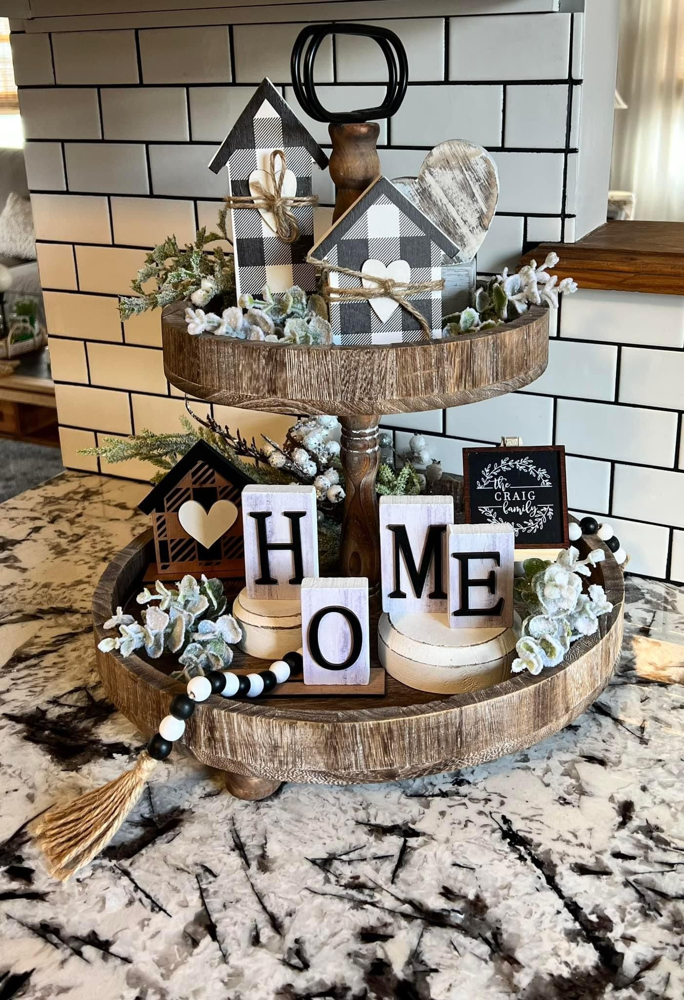
SYNCVIBE Wooden Farmhouse Round Black 3 Tiered Decorative Tray Stand
Shop on AmazonKigley 8 Pcs Custom Wooden Name Sign, 8 Letter Block Set, Wood
Shop on AmazonChoose a Color Palette First
I recommend narrowing things down to three or four main colors before buying anything.
For a cozy neutral tray, try combining cream, beige, warm wood, and soft green.
For a farmhouse kitchen, try white, black, natural wood, and greenery.
For a fall tray, try terracotta, cream, brown, and muted green.
You do not need every color showing up in every object.
Repeat the same colors across different levels instead, that repetition is what creates cohesion.
Woration 16 Pcs Fabric Artificial Pumpkins Set, Lake Green Velvet Decoration
Shop on AmazonSet of 3 Decorative Books for Home Decor, Faux Books for Bookshelf
Shop on AmazonHow Do You Style a Tiered Tray Without Making It Look Cluttered?
The easiest answer is to treat the tray as one single composition rather than several separate little shelves.
Each level should connect visually to the ones around it.
The goal is for the eye to move naturally from the bottom, through the middle, and up toward the top.
I usually start with three questions: what does this tray actually need to do, what colors already exist nearby, and which pieces can create different heights?
Once those questions are answered, the actual styling gets a lot easier.
Good design is not only about how something looks, it is also about how it functions, and a tiered tray needs to work both visually and practically at once.
Drop a giant decorative object on the bottom level and block everything behind it, and technically the tray is decorated, but you have also built a tiny obstacle course in the process.
Keep the display functional, especially in a kitchen where it actually gets used daily.
Urban Deco Wooden Decorative Tray, Two Tiered Round Serving Tray with Metal Handle, White
Shop on Amazon6 Pcs Ceramic Bird Figurines, Multi-Color, 2.2 Inch Mini Birds for Home Decor
Shop on AmazonWhat Is a Tiered Tray and Why Does It Work So Well?
A tiered tray uses two or more levels to display small decorative or practical items vertically.
You will find round, square, wood, metal, farmhouse, rustic, modern, and even vintage-inspired versions out there.
The vertical structure gives you something a normal flat tray simply cannot: real height without eating up much counter space.
That makes it especially useful in a small kitchen or apartment.
Instead of spreading everything across the counter, the display stacks upward instead.
The appeal comes down to a very common decorating problem it quietly solves.
Small objects often look disconnected when scattered individually around a room.
A tiered tray pulls those little pieces into one intentional arrangement instead.
People reach for one for kitchen counter decor, coffee station decor, dining table centerpieces, bathroom counter decor, entryway styling, seasonal decorations, everyday farmhouse decor, cottage-style displays, rustic kitchen decor, and holiday decorating alike.
I especially like tiered trays for small seasonal updates.
Keep the tray itself year-round and simply swap pumpkins for pinecones, or flowers for ornaments, whenever the season changes.
Round 3-Tier Decorative Wood Tray
Shop on AmazonPlexon 3 Tiered Tray Stand, Round Metal and Wood Serving Tray, Farmhouse Centerpiece
Shop on AmazonFinal Thoughts on Styling a Tiered Tray
Learning to style a tiered tray does not require a huge collection of decorations or a trained eye for design.
Start with a simple color palette, create different heights, mix in a few textures, and give each level an actual purpose.
Treat the tray as one composition instead of decorating each shelf as its own separate little project.
Add greenery for movement, wood for warmth, ceramics for structure, and one focal piece to anchor the whole thing.
Most importantly, do not feel pressured to fill every empty spot on the tray.
A beautifully styled tiered tray should feel collected, useful, and relaxed all at once.
If you can still see some of the tray itself, reach the things you actually use, and genuinely enjoy looking at it every time you walk past, you have probably gotten it right.
And if you end up adding one too many little pumpkins or mugs along the way?
There is always tomorrow's decorating edit to fix it.